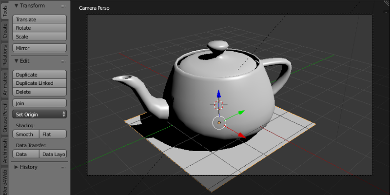
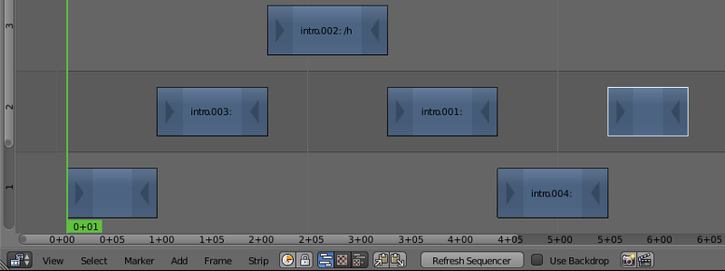
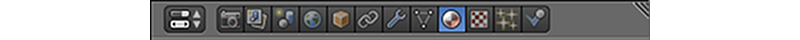
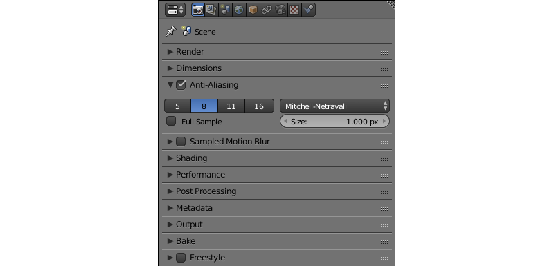
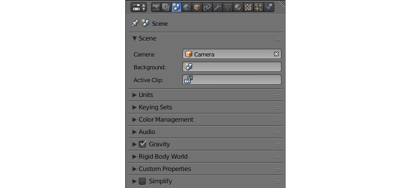
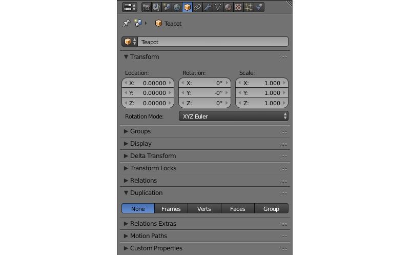
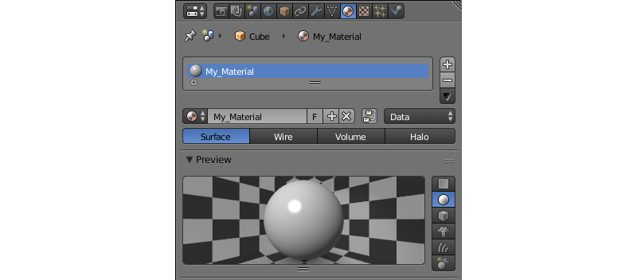
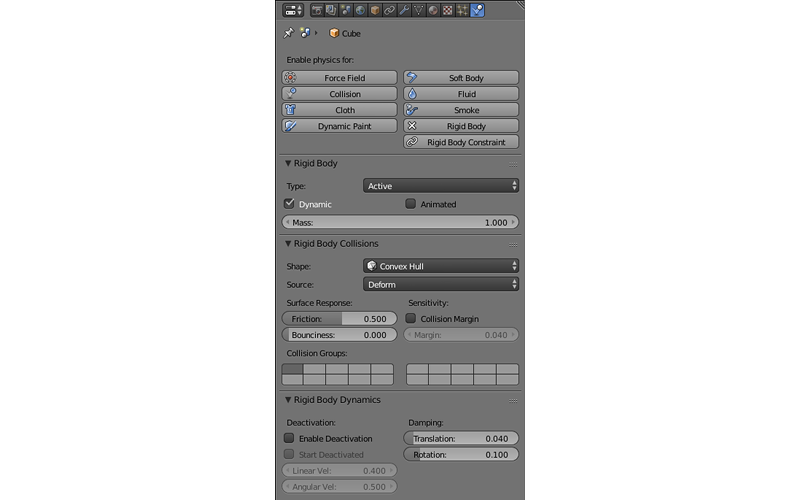
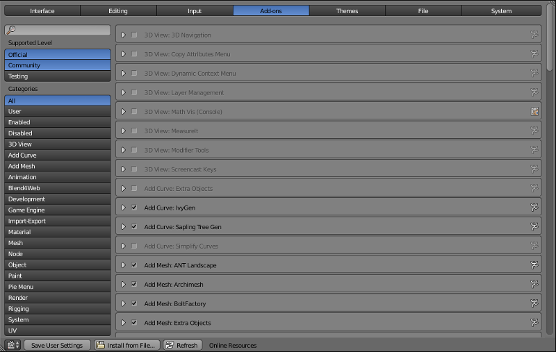

Интерфейс Blender¶
Содержание
Blender - свободный пакет для работы с трёхмерной графикой. Включает средства для моделирования объектов, текстурирования, риггинга и анимации, а также визуализации, композитинга и даже видеомонтажа. Помимо этого, Blender может использоваться и для создания интерактивных приложений, в том числе онлайновых.
Blender - кроссплатформенная программа, одинаково хорошо работающая как в Windows, так и в Linux и macOS.
Интерфейс Blender состоит из нескольких окон. Количество окон и их типы не заданы жёстко; пользователь может настроить интерфейс по своему усмотрению - вручную или выбрав один из готовых вариантов расположения окон из меню Screen Layout в верхней части экрана.
3D View¶
Главное окно программы. Отображает загруженную 3D-сцену (с точки зрения камеры или с любого другого ракурса). В этом окне создаются, редактируются и анимируются трёхмерные объекты, составляющие сцену.
Это окно открыто по умолчанию.
Timeline¶

Это окно (обычно оно располагается в нижней части экрана) содержит различные данные об анимации, в том числе текущий кадр, общее количество кадров (т.е., продолжительность анимации в сцене) и ключевые кадры для выбранного объекта. Сами ключевые кадры также создаются в этом окне.
Это окно открыто по умолчанию.
Graph Editor¶

Инструмент для настройки различных аспектов анимации выбранного объекта с помощью f-кривых. Graph Editor может использоваться в Blend4Web точно так же, как в самом Blender.
Dope Sheet¶

Инструмент для работы с ключевыми кадрами. Может использоваться в Blend4Web точно так же, как в самом Blender.
NLA Editor¶

Инструмент для редактирования нелинейной анимации. Движок Blend4Web поддерживает NLA, а в этой документации им посвящён отдельный раздел.
UV/Image Editor¶

Этот инструмент используется для редактирования UV-карт, а также различных 2D-изображений, в том числе текстур.
UV-карты также поддерживаются в Blend4Web.
Video Sequence Editor¶
Предназначается для монтажа видеофайлов. Полноценный видеоредактор с возможностью загружать файлы, удалять ненужные фрагменты, применять различные эффекты и сохранять результат в итоговое видео. В движке Blend4Web не используется.
Movie Clip Editor¶

Инструмент для редактирования видеороликов. В основном применяется для трекинга камеры и для создания масок. В движке Blend4Web не используется.
Text Editor¶

Простой текстовый редактор. Поддерживает перенос слов, подсветку синтаксиса, нумерование строк, поиск и замену и другие функции.
Blend4Web не использует текстовый редактор для редактирования файлов проекта, т.к. специально для этого в состав Менеджера проектов входит отдельный редактор. Однако текстовые файлы, созданные в Text Editor (или импортированные в .blend-файл с его помощью) могут применяться для хранения текстов мета-тэгов в Blend4Web.
Node Editor¶

Интерфейс для создания нодовых материалов, текстур и эффектов постобработки. Движок Blend4Web поддерживает нодовые материалы, но не поддерживает нодовые текстуры и постэффекты. Кроме того, Blend4Web использует особый тип нод для создания нодовой логики.
Logic Editor¶

Инструмент для редактирования логических цепочек в Blender Game Engine.
Примечание
Движок Blend4Web не поддерживает Logic Editor. Вместо него применяется похожий, но независимый инструмент: Редактор логики, использующий особый тип нод.
Properties¶
Второе по важности окно программы. Содержит различные параметры, некоторые из которых относятся только к выбранному объекту, другие же затрагивают всю сцену.
Обычно это окно располагается справа от окна 3D View.
Окно Properties включает несколько вкладок, каждая из которых содержит собственную группу параметров. Ниже перечислены все доступные вкладки.
Render¶
Эта вкладка содержит параметры визуализации.
В режиме Blend4Web вкладка Render содержит набор параметров, несколько отличный от стандартного. Эти параметры описаны здесь
Render Layers¶

С помощью этой вкладки визуализированное изображение можно разделить на несколько “слоёв” (диффузные цвета, тени, нормали и пр.), которые затем можно использовать для композитинга в Blender или в другой программе. В движке Blend4Web эта вкладка не используется.
Scene¶
Содержит различные параметры настройки 3D-сцены.
Эта вкладка поддерживается в Blend4Web, однако включает набор параметров, отличный от стандартного. Эти параметры подробно описаны здесь.
World¶

Здесь находятся параметры, контролирующие окружения сцены, в том числе цвета фона, освещение от окружающей среды, настройки тумана и пр.
Эта вкладка также применяется в Blend4Web для настройки окружения. При этом сами параметры несколько отличаются от таковых в Blender. Различия описываются здесь.
Object¶
Эта вкладка содержит различные параметры объекта, в том числе его имя, местоположение, группы и др. Параметры объекта активно используются в движке Blend4Web и описаны в особом разделе документации.
Constraints¶

Ограничители (“констрейнты”) используются для того, чтобы тем или иным образом ограничить перемещение объекта (например, заставить его двигаться вдоль определённой траектории). Ограничитель используются 3D-художниками с целью упростить создание сложных движений и сделать удобнее сам процесс анимации. На этой вкладке находятся инструменты для добавления ограничителей к выбранному объекту, для дальнейшей настройки ограничителей и их удаления.
Вкладка Constraints может использоваться и в Blend4Web, однако на данный момент движок поддерживает не все ограничители, доступные в Blender. Узнать, как пользоваться ограничителями объектов в Blend4Web, можно в соответствующем разделе.
Modifiers¶

Этот список содержит все модификаторы, назначенные выбранному объекту. Здесь же можно добавлять новые модификаторы, а также настраивать и удалять уже имеющиеся.
Движок Blend4Web поддерживает использование модификаторов, однако по умолчанию они не применяются к объектам при экспорте сцены. Применить модификаторы можно при помощи опций Apply Modifiers или Apply Scale and Modifiers.
Data¶

Эта вкладка содержит информацию о группах вершин, UV-картах, ключах формы и других аналогичных параметрах выбранного объекта. Она поддерживается в Blend4Web и не содержит никаких дополнительных настроек в этом режиме.
Material¶
Здесь находятся настройки материала (или нескольких материалов) выбранного объекта.
Движок Blend4Web использует почти такие же настройки материалов, что и Blender. Различия описаны в соответствующей главе.
Texture¶

Эта вкладка предназначается для настройки текстур как для материалов, так и для окружающей среды.
Эта же вкладка применяется для настройки текстур в Blend4Web. Работа с текстурами описана в соответствующем разделе.
Particles¶

Здесь создаются и настраиваются системы частиц.
Частицы поддерживаются и в движке Blend4Web, где они применяются для создания флюидов и копий объектов.
Physics¶
Физические настройки выбранного объекта: назначенная ему физическая модель, ограничивающий объём и др. Физика поддерживается в Blend4Web и описана в отдельной главе.
Outliner¶

Содержит т.н. scene graph - древовидную структуру, которая объединяет всю информацию, находящуюся в .blend-файле.
По умолчанию это окно расположено в правом верхнем углу окна Blender.
User Preferences¶
Это окно содержит разнообразные настройки Blender. Настройки подразделяются на несколько категорий; каждая категория занимает одну из вкладок, которые можно переключать в верхней части окна. Набор вкладок включает:


{kind=link}
{kind=link}
{kind=link}
{kind=link}
{kind=link}
{kind=link}
{kind=link}
{kind=link}
Input¶

Настройки взаимодействия программы с пользователем. Здесь назначаются горячие клавиши, а также реакция Blender на различные события мыши и клавиатуры.
Add-ons¶
{kind=link}
Эта вкладка предназначена для установки, настройки и удаления аддонов Blender, в том числе аддона Blend4Web.
Themes¶

Эта вкладка предназначена для настройки интерфейса и цветовой схемы Blender. Настройку можно выполнить вручную, а можно выбрать одну из существующих тем.
File¶

На этой вкладке задаются пути по умолчанию для blend-файлов, текстур, отрендеренных изображений и других файлов. Здесь же настраиваются параметры автосохранения.
Поле Scripts на этой вкладке используется для установки движка Blend4Web. Процесс установки подробно описан в соответствующей главе.
System¶

Системные настройки, в том числе разрешение, устройство рендеринга, параметры окна просмотра, язык интерфейса и пр.
Info¶

Панель главного меню и список сообщений об ошибках. Это окно открыто по умолчанию и находится в верхней части экрана (сверху от окна 3D View).
Примечание
По умолчанию список ошибок свёрнут.
Совет
Развернуть его можно, потянув границу окна Info вниз.
File Browser¶

Встроенный файловый менеджер, который используется преимущественно для сохранения и загрузки .blend-файлов, а также для импорта и экспорта сцен и медиаданных.
Python Console¶

Инструмент, предназначенный для продвинутых пользователей, которым требуется гибкость и быстрое исполнение команд. Консоль поддерживает автодополнение и предоставляет полный доступ к API Python.